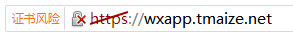

最近在做微信小程序，但是微信的wx.request(OBJECT)接口里面wx.request发起的是 HTTPS 请求 并且url必须是开发者服务器接口地址。
但是要用到别人的api怎么办，通过wx.request是禁止请求的，只好通过自己的服务器做一次转发/代理，下面是步骤
生成证书
-
进入你想创建证书和私钥的目录
我自己建立了一个目录用于存放证书
/usr/local/nginx/ssl-key-ca/ -
创建私钥,证书…
$ openssl genrsa -des3 -out server.key 1024 $ openssl req -new -key server.key -out server.csr $ cp server.key server.key.org $ openssl rsa -in server.key.org -out server.key -
标记证书使用上述私钥和CSR：
$ openssl x509 -req -days 365 -in server.csr -signkey server.key -out server.crt
Nginx配置SSL
更改nginx.conf
添加下面的配置
#虚拟主机wxapp.tmaize.net
server {
listen 443 ssl;
server_name wxapp.tmaize.net;
ssl_certificate /usr/local/nginx/ssl-key-ca/server.crt;
ssl_certificate_key /usr/local/nginx/ssl-key-ca/server.key;
location / {
#请求转发到tomcat
proxy_pass http://127.0.0.1:8080/wxapp/;
}
}
应用配置
重启Nginx服务，如果没有报错，到这里就OK了
但是我之前编译Nginx时好像少配置了好多模块，报错信息如下，没有ngx_http_ssl_module模块
[root@VM_243_11_centos ~]# cd /usr/local/nginx/sbin/
[root@VM_243_11_centos sbin]# ./nginx -s reload
nginx: [emerg] the "ssl" parameter requires ngx_http_ssl_module in /usr/local/nginx/conf/nginx.conf:56
重新编译Nginx
-
查看之前的编译信息
[root@VM_243_11_centos sbin]# ./nginx -V nginx version: nginx/1.10.1 built by gcc 4.4.7 20120313 (Red Hat 4.4.7-16) (GCC) configure arguments:果然是少了好多模块..
去官网下载源码手动编译添加ngx_http_ssl_module模块，当前版本是1.10.1，官网找不到了，可以下载1.10.x的其他版本
-
下载源码重新编译
注意参数之间的空格
./configure --prefix=/usr/local/nginx --with-http_stub_status_module --with-http_ssl_module --with-file-aio --with-http_realip_moduleOK没有错误，执行make注意不要再 make install，会在objs目录生成nginx执行文件
-
备份旧的nginx执行文件，替换上新的
[root@VM_243_11_centos objs]# cd /usr/local/nginx/sbin/ [root@VM_243_11_centos sbin]# cp nginx nginx.back [root@VM_243_11_centos sbin]#cp /root/nginx-1.10.3/objs/nginx .测试新的nginx程序是否正确
[root@VM_243_11_centos sbin]# ./nginx -t nginx: the configuration file /usr/local/nginx/conf/nginx.conf syntax is ok nginx: configuration file /usr/local/nginx/conf/nginx.conf test is successful -
重启nginx
[root@VM_243_11_centos sbin]# ./nginx -s stop [root@VM_243_11_centos sbin]# ./nginx
访问域名测试

Ok，没任何问题，证书有风险是没有CA机构认证(好贵的…)，至此可以满足在小程序里面发送请求的条件